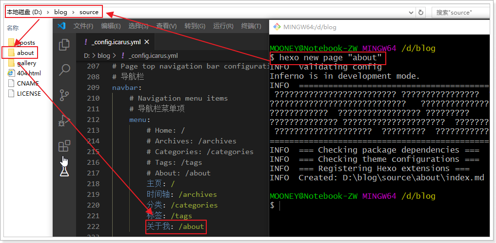

Hexo + icarus 博客搭建（一）
本文主要介绍 Hexo + icarus 基础环境搭建，包含 Hexo 框架的下载安装，icarus 及其组件的下载安装，完成以下操作步骤将初步完成 Hexo 博客 + icarus 主题的配置。后续将对 Hexo 博客进行功能扩展。
来到这里相信你已经正确安装 Hexo 博客的基础运行环境了。
即：
- 已安装 Git
1 | $ git --version # 查看 git 版本 |
- 已安装 Node.js (Node.js 版本需不低于 10.13，建议使用 Node.js 12.0 及以上版本)
1 | $ node -v # 查看 node.js 版本 |
如未正确安装，请参照 Hexo官方文档 进行安装，以下操作均基于Windows平台。
安装Hexo
所有必备的应用程序安装完成后，即可使用 npm 安装 Hexo 框架。
1 | $ npm install -g hexo-cli # 全局安装 Hexo 框架 |
查看 Hexo 版本，检查是否安装成功。
1 | $ hexo -v |
Hexo 初始化
在任意位置新建一个文件夹，取名 blog，在blog/ 目录下 打开 CMD 窗口，运行以下命令，进行 Hexo 框架初始化。
1 | $ hexo init # Hexo 初始化 |

下载icarus主题
运行下列命令以下载 icarus 主题，此处可能下载较慢，请耐心等待。
1 | $ git clone https://github.com/ppoffice/hexo-theme-icarus.git themes/icarus |

切换icarus主题
打开 _config.yml 文件，将 thems 项的值更改为 icarus

启动Hexo
1 | $ hexo g # 生成静态页面 |
这里会提示错误 ERROR
我们根据上图中的错误提示安装 icarus 主题所需组件。
1 | $ npm install --save bulma-stylus@0.8.0 hexo-renderer-inferno@^0.1.3 hexo-component-inferno@^0.10.1 inferno@^7.3.3 inferno-create-element@^7.3.3 |
再依次运行命令行，重新生成静态页面，并启动 Hexo 服务。
1 | $ hexo g # 生成静态页面 |
打开浏览器输入下列网址预览效果。
1 | http://localhost:4000 |
添加 自定义页面
- 新建一个 分类 页面
1 | $ hexo new page categories |
- 新建一个 标签 页面
1 | $ hexo new page tags |
- 新建一个 关于我 页面
1 | $ hexo new page "about" |

- 新建一个 自定义 页面
1 | $ hexo new page "guestbook" |
接着在主题的 _config.yml 文件中的 menu 中进行配置，icarus 主题在 _config.icarus.yml 文件中的 navbar –> menu 中进行配置，如图。

写作
1 | $ hexo new [layout] <title> |
新建一篇文章示例：
1 | $ hexo new 第一篇文章的名字 |
在此之前通常建议开启 _config.yml 中的资源文件夹，以便创建文章的同时，自动为你创建同名资源文件夹，这通常用于存放你在本篇文章所用到的图片等资源。存在此文件夹中的图片，Hexo 生成静态页面时，将会将二者存放在同一文件夹下。
1 | post_asset_folder: true # 开启文章资源文件夹 |
部署
在正式开始部署上传到 GitHub 上前，通常建议配置 SSH 秘钥，这样不用每次上传部署都要进行登录验证，有关如何配置 SSH 秘钥，请参阅
————–此处省略10000字————————-
————–挖坑1：GitHub 添加 SSH—————
详情请参阅：Git配置SSH秘钥
————–挖坑2：GitHub 静态页面—————
- 首先在
_config.yml中修改添加以下内容，指定部署上传的 GitHub 库。
1 | deploy: |
- 安装
git组件1
$ npm install hexo-deployer-git --save
此外，如果您的 Github Pages 需要使用 CNAME 文件自定义域名，请将 CNAME 文件置于 source/ 目录下，只有这样 hexo deploy 才能将 CNAME 文件一并推送至部署分支。
- 上传至GitHub
1
$ hexo d
暂时就这样…